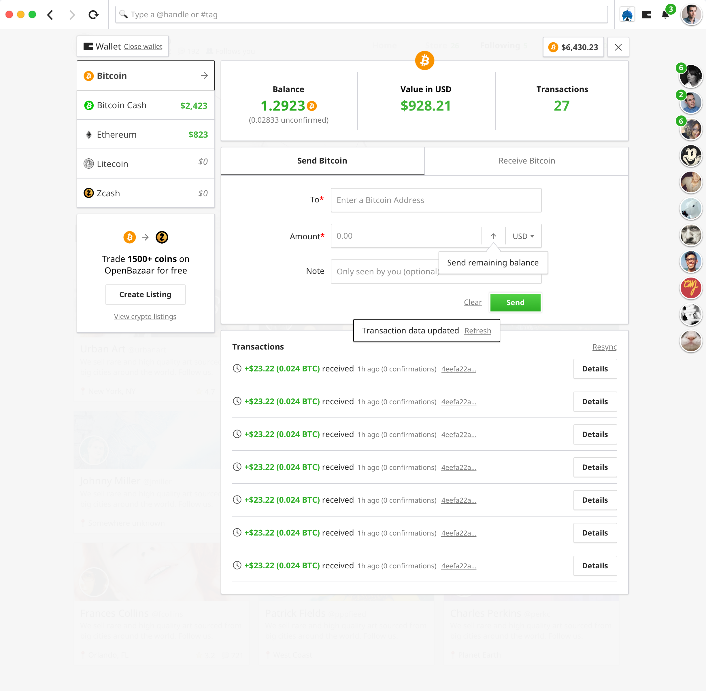

OpenBazaar is the most free marketplace available on the planet. That freedom implies choice: the right to choose who to trade with, to choose how to protect your purchase, or to choose the visibility of your listings. That freedom should also extend to your choice of currency. And more than that! For your choice to be independent of any one developer’s motives, including OB1. This is the first of two posts which share the motivation and direction our team will take as we explore how to make OpenBazaar work with any currency users choose.
Why The Wallet?
Right around the time OpenBazaar 2.0 launched, Bitcoin – the default payment option of OpenBazaar at the time – was experiencing high transaction volume lasting several months resulting in network congestion and a poor user experience. All of this created significant friction during a small window where many first impressions would be established. With the landscape of growing alternative cryptocurrencies simultaneously booming around Bitcoin’s shortcomings, it punctuated the need for a choice in payment inside OpenBazaar.
Seeking Currency Nirvana
Making OpenBazaar capable of trading with multiple simultaneous currencies affects many aspects of the application: the Seller and Moderator both have concerns for the types of currencies they can accept on the network; the Buyer has concerns in the refund scenarios; the Wallet implementation manipulates the state of the ledger with the current currency’s representation in mind; there are concerns for the protocol in how certain listings shall be validated; and many screens of interface which need to be reconsidered. With lot of ground to cover, we needed a solution in user’s hands with the least development effort required.
A solution was devised that many wallet implementations (along with their respective currency’s representations) would be provided along with the application and the user would be able to select one on startup. The additional options for currency usage would include Bitcoin Cash and Zcash and would make the application’s active currency interchangeable while touching very few of the related details. A seamless experience for the user with just a restart between each currency in use. Only a few screens in the interface would need a change to represent the currently active currency. The server would allow each configuration to be maintained side-by-side facilitating the simple switching from one currency to another without needing to break any of the previously made design decisions.
In January 2018, OB1 released version 2.1. This release was a half-step which allowed our team to quickly respond to the unexpected market conditions, but it also created many new challenges. The release proved that the option of other currencies were welcome and being requested on the network. At the time of publishing this article, 12% of crawlable listings have selected Bitcoin Cash as the accepted currency. But it also educated us on the limitations of adopting third-party wallets as we attempted to support multiple contributions; each presenting their own technical and social challenges.

When the OpenBazaar wallet was designed, we assumed quite a few time-saving details. The biggest of these assumptions was that Bitcoin would be the only currency in use. This, of course, had side-effects in our design such as a ledger which only tracks UTXO-based currencies as well as displaying values in other currencies from values represented in Bitcoin. We also made the assumption that users would prefer wallets which could independently verify their own transactions as a matter of ensuring the user need not trust the protocol or even the UI. As such, our wallet implementations default to using Simple Payment Verification (SPV) to ensure the user’s own transactions are highly unlikely to be invalid with the option for users to operate full Bitcoin or Bitcoin Cash nodes if they preferred.
Many of these design decisions needed reconsideration. The maturing mobile experience which the OB1 team was exploring in the background needed a better solution and the existing 2.0 desktop experience was certainly ready to see a simpler interface when using multiple currencies. The existing answer would have lead toward running an SPV wallet (or full node) for each currency simultaneously, but would not scale in resource-constrained environments such as mobile and older-generation computers. OB1 is also integrating Ethereum as a currency for trade on the network and this has highlighted limitations in our UTXO-based ledger and wallet interface.
Formalizing the Multiwallet
Needing to make a decision with some urgency, internal discussion landed us on a solution in pursuit of an API backend driving interactions on the blockchain. Each API would handle the concerns for handling their respective currency’s blockchain which would reduce the responsibility of the OB1 team in maintaining currency-specific logic. Users would no longer need to provide the computing resources for transacting on the currency’s blockchain at the expense of the API operator (currently OB1, but more on this later).
The APIs of the existing currencies that we already support abstract nicely into our existing wallet-interface with a minor change of adding an additional dimension to a few of the requests (so the wallet knows to which currency’s blockchain a transaction should be applied). With only very minor technical concerns that seemed solvable, the biggest obstacle was that we were sacrificing the user’s default expectation that they can trustlessly engage with their built-in wallet without any other alternatives. Still an imperfect solution for the security-conscious, but a good next step toward supporting multiple simultaneous currencies.

Want to see more? Click here for an interactive demo!
We expect that different use cases will change the user’s expectations of the wallet. For example, a vendor might care more about the verifiability of their transactions than a buyer, and a mobile user may prefer to utilize an API-based wallet to save on limited device resources. It would be difficult to build the ideal wallet for all of our users.
Further, the OB1 team is committed to seeing OpenBazaar as a protocol of trade which is agnostic of the currency it uses for trade. Any time invested into wallet maintenance is only distracting us from our goals. This was made painfully obvious by the questions raised when the third-party wallet contributions began rolling in. It was unclear who would provide a fix when a bug compromises funds in a user’s wallet. Or decide when a wallet implementation was valuable enough to offer as an option. Nor did we want to be the ones conjuring arbitrary rules for approval.
Then, the obvious question was asked: How could we offer the choice of currency and wallet directly to the user? More on that in an upcoming post!
Do you want to help build this with us?
Download OpenBazaar right now to get buying or selling in minutes or join us on Github to contribute to the development of this open-source project!